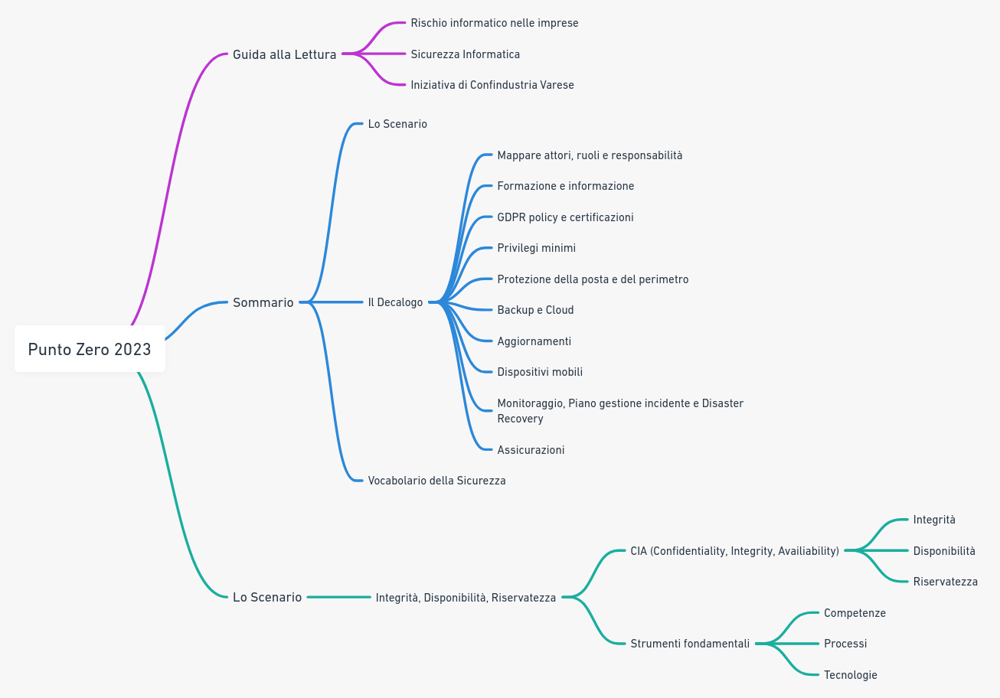

Luca: Puoi leggere il documento all'indirizzo https://www.confindustriavarese.it/web\\_v4/site.nsf/dx/0-0-0-0-0-0-0Punto%20Zero\\_2023.pdf/$FILE/0-0-0-0-0-0-0Punto%20Zero\\_2023.pdf e aiutarmi a lavorare sui suoi contenuti? Se la risposta è positiva, per ora limitati a confermarmi che lo farai.
ChatGPT: Sì, posso leggere il documento al link fornito e aiutarti a lavorare sui suoi contenuti. Confermo che procederò con la lettura del documento. Cosa vorresti fare successivamente?
Luca: Per prima cosa, costruisci e visualizzi una mappa semantica dei principali contenuti del documento?
ChatGPT: [usati i plugin Ai PDF e Whimsical Diagrams] Ecco una mappa semantica dei principali contenuti del documento "Punto Zero 2023":
Cosa vorresti fare ora?
Luca: Bene. Se la mappa non diventa troppo complessa, puoi aggiungere il contenuto del "decalogo"?
ChatGPT: [usati i plugin Ai PDF e Whimsical Diagrams] Ecco la mappa semantica estesa del documento "Punto Zero 2023" con l'aggiunta dei contenuti del "Decalogo":

Cosa vorresti fare ora?
Luca: Eccellente. Puoi scrivere una sintesi discorsiva dei principali contenuti del documento, rivolta all'Amministratore Delegato di un'azienda utente di servizi informatici e che non ha ancora una competenza specifica a proposito di sicurezza informatica?
ChatGPT: Certamente! Ecco una sintesi discorsiva rivolta all'Amministratore Delegato:
Gentile Amministratore Delegato,
Il documento "Punto Zero 2023" di Confindustria Varese affronta un tema di crescente importanza: la sicurezza informatica nelle imprese. In un'epoca in cui la digitalizzazione è sempre più pervasiva, la protezione dei dati e dei sistemi aziendali diventa fondamentale.
Il documento inizia con una Guida alla Lettura che sottolinea l'importanza del rischio informatico nelle imprese, la necessità di una solida sicurezza informatica e l'iniziativa di Confindustria Varese in questo ambito.
Nella sezione Lo Scenario, viene introdotto il concetto di CIA (Confidentiality, Integrity, Availability) che rappresenta i tre pilastri della sicurezza informatica:
-- Integrità: Garantire che i dati siano protetti da modifiche non autorizzate.
-- Disponibilità: Assicurarsi che i dati siano accessibili quando necessario.
-- Riservatezza: Proteggere i dati da accessi non autorizzati.
Per affrontare queste sfide, le aziende devono dotarsi di competenze adeguate, processi ben definiti e tecnologie all'avanguardia.
Il cuore del documento è rappresentato dal Decalogo, una lista di dieci suggerimenti fondamentali per garantire la sicurezza informatica nelle PMI:
1. Mappare attori, ruoli e responsabilità.
2. Formare e informare il personale.
3. Adottare politiche GDPR e ottenere certificazioni.
4. Limitare i privilegi di accesso.
5. Proteggere la posta elettronica e il perimetro aziendale.
6. Implementare soluzioni di backup e utilizzare il cloud in modo sicuro.
7. Mantenere i sistemi sempre aggiornati.
8. Gestire con attenzione i dispositivi mobili.
9. Monitorare costantemente e avere piani di gestione degli incidenti e di disaster recovery.
10. Considerare le assicurazioni come ulteriore strato di protezione.
In conclusione, la sicurezza informatica non è più un optional, ma una necessità. Le minacce informatiche sono in costante evoluzione e possono avere gravi ripercussioni sulla continuità aziendale. È essenziale che, come Amministratore Delegato, si prenda sul serio questo argomento e si adottino le misure necessarie per proteggere la propria azienda.
Cordiali saluti,
[Il tuo nome]
Spero che questa sintesi possa essere di aiuto. Se desideri ulteriori dettagli o modifiche, fammelo sapere!
Luca: Bene. Vorrei allora che scrivessi un'altra sintesi del documento, questa volta rivolta a un docente di informatica di un Istituto Tecnico, che intende proporre ai suoi studenti di leggere il documento per informarsi di come nel mondo del lavoro la questione della sicurezza informatica è diventata importante.
ChatGPT: Certamente! Ecco una sintesi discorsiva rivolta a un docente di informatica di un Istituto Tecnico:
Gentile Professore,
Il documento "Punto Zero 2023", prodotto da Confindustria Varese, rappresenta una risorsa preziosa per chiunque desideri comprendere l'importanza crescente della sicurezza informatica nel contesto lavorativo odierno.
Il documento si apre con una Guida alla Lettura che mette in evidenza la rilevanza del rischio informatico nelle imprese e l'essenzialità di una robusta sicurezza informatica. Questa sezione potrebbe offrire ai suoi studenti una panoramica immediata dell'importanza pratica della materia che studiano.
Nella sezione Lo Scenario, viene introdotto il concetto fondamentale di CIA (Confidentiality, Integrity, Availability). Questi tre pilastri della sicurezza informatica sono:
-- Integrità: Assicurare che i dati non subiscano modifiche non autorizzate.
-- Disponibilità: Garantire l'accesso ai dati quando necessario.
-- Riservatezza: Proteggere i dati da accessi non desiderati.
Questi concetti, che magari sono già trattati nel curriculum, vengono qui presentati in una luce pratica, mostrando come siano essenziali nel mondo del lavoro.
Il Decalogo è la parte centrale del documento e offre dieci suggerimenti chiave per garantire la sicurezza informatica nelle imprese. Questa sezione potrebbe servire come base per una serie di lezioni o progetti, permettendo agli studenti di esplorare ciascun punto in dettaglio e di comprendere come le teorie apprese in classe si traducano in azioni concrete nel mondo professionale.
In conclusione, "Punto Zero 2023" non è solo una guida per le imprese, ma anche un ottimo strumento didattico. Leggere e discutere questo documento in classe potrebbe offrire ai suoi studenti una visione pratica e attuale della sicurezza informatica, preparandoli meglio per le sfide del futuro professionale.
Cordiali saluti,
[Il tuo nome]
Spero che questa sintesi possa essere di aiuto nella sua attività didattica. Se desidera ulteriori dettagli o modifiche, sono a sua disposizione!
Luca: Supponiamo che quello stesso docente voglia mettere alla prova le precompetenze dei suoi studenti sui temi che il documento sviluppa, proponendo loro un test con cinque domande a risposta chiusa, con l'obiettivo non certo di scoraggiarli, ma anzi di invogliarli a leggere il documento e imparare. Dunque le domande dovrebbero essere semplici ma interessanti. Riesci a costruire una bozza di questo test, per evitare ambiguità anche indicando le risposte giuste?
ChatGPT: Certamente! Ecco una bozza del test con cinque domande a risposta chiusa, pensate per stimolare la curiosità degli studenti e invogliarli a leggere il documento:
Test di Precompetenze sulla Sicurezza Informatica
1. Quali sono i tre pilastri fondamentali della sicurezza informatica, spesso indicati con l'acronimo CIA?
a) Codifica, Integrazione, Autenticazione
b) Connettività, Integrità, Accessibilità
c) Confidentiality, Integrity, Availability
d) Codifica, Input, Archiviazione
Risposta giusta: c) Confidentiality, Integrity, Availability
2. Per quale motivo è importante mappare attori, ruoli e responsabilità in un'azienda?
a) Per organizzare le feste aziendali
b) Per definire chi ha accesso a quali dati e sistemi
c) Per stabilire chi ha l'ufficio più grande
d) Per determinare chi può usare la stampante
Risposta giusta: b) Per definire chi ha accesso a quali dati e sistemi
3. Cosa rappresenta il GDPR nel contesto della sicurezza informatica?
a) Un software antivirus
b) Un tipo di attacco informatico
c) Una politica di backup dei dati
d) Un regolamento europeo sulla protezione dei dati personali
Risposta giusta: d) Un regolamento europeo sulla protezione dei dati personali
4. Perché è importante avere un piano di disaster recovery?
a) Per organizzare le vacanze aziendali
b) Per ripristinare i sistemi in caso di guasti o attacchi
c) Per pianificare le riunioni
d) Per gestire le email aziendali
Risposta giusta: b) Per ripristinare i sistemi in caso di guasti o attacchi
5. Cosa si intende con "Privilegi minimi" nel contesto della sicurezza informatica?
a) Dare a tutti l'accesso a tutti i dati
b) Limitare l'accesso ai dati solo a chi ne ha effettivamente bisogno
c) Assicurarsi che tutti abbiano una password semplice
d) Consentire a tutti di installare software sul proprio computer
Risposta giusta: b) Limitare l'accesso ai dati solo a chi ne ha effettivamente bisogno
Spero che questo test possa essere utile per valutare le precompetenze degli studenti e stimolare il loro interesse verso il documento. Se desidera ulteriori modifiche o domande, sono a sua disposizione!
Luca: Vorrei che mi spiegassi, in accordo ai contenuti del documento, gli argomenti essenziali a proposito di protezione della posta e del perimetro, anche considerando che il termine "perimetro" è in questo caso chiaramente idiomatico, e in quanto tale non facilmente comprensibile nel suo significato al di fuori del contesto inteso.
ChatGPT: [usato il plugin Ai PDF] Certamente! Ecco una spiegazione dettagliata sugli argomenti essenziali riguardanti la protezione della posta e del perimetro, basata sui contenuti del documento "Punto Zero 2023":
Protezione della Posta e del Perimetro
1. Importanza della Protezione della Posta: La posta elettronica è uno dei principali canali attraverso cui le minacce informatiche possono penetrare in un'azienda. Circa il 90% delle minacce alla sicurezza di dati e sistemi passa dalla posta elettronica. Questo rende essenziale avere soluzioni robuste per proteggere le comunicazioni via email.
2. Il Perimetro di Sicurezza: Tradizionalmente, il "perimetro" in sicurezza informatica si riferiva al confine tra le risorse interne di un'organizzazione e il mondo esterno, solitamente Internet. Tuttavia, con l'avvento dello smart working e l'uso crescente di dispositivi mobili e cloud, questo perimetro si è esteso e ora include anche le case dei dipendenti e altri luoghi al di fuori dell'ufficio fisico. L'introduzione dello smart working ha allargato il perimetro di sicurezza dell'azienda alle abitazioni del personale, esponendo l'impresa a nuovi rischi.
3. Protezione Avanzata della Posta: Oltre ai tradizionali strumenti come gli antivirus e gli antispam, è essenziale avere soluzioni avanzate per proteggere la posta elettronica da minacce come il phishing, malware e altre forme di attacchi.
4. Protezione del Perimetro: La protezione del perimetro aziendale richiede una serie di strumenti e pratiche, tra cui:
--- Firewall: Per filtrare il traffico in entrata e in uscita e bloccare le minacce.
--- VPN (Virtual Private Network): Per garantire connessioni sicure tra la sede aziendale e i dipendenti remoti.
--- Autenticazione a più fattori: Per garantire che solo gli utenti autorizzati possano accedere alle risorse aziendali.
--- Penetration Test: Test effettuati per identificare vulnerabilità nel perimetro aziendale.
--- Sicurezza delle reti Wi-Fi: Separare le reti Wi-Fi aziendali da quelle per gli ospiti e proteggere l'accesso con password sicure.
5. Il Fattore Umano: Nonostante la tecnologia sia fondamentale, la formazione e l'informazione del personale sono altrettanto cruciali. Gli utenti devono essere consapevoli dei rischi e sapere come comportarsi per evitare minacce.
In sintesi, mentre la tecnologia gioca un ruolo fondamentale nella protezione della posta e del perimetro, è essenziale non sottovalutare l'importanza della formazione e dell'informazione del personale. La sicurezza informatica è una responsabilità condivisa e richiede un approccio olistico che combini tecnologia, processi e persone.
Luca: Ancora sul tema che il documento chiama "Protezione della Posta e del Perimetro", hai dei suggerimenti da proporre per migliorare quanto è scritto nel documento? Ci trovi insomma argomenti poco chiari, controversi, incompleti, ...?
ChatGPT: Basandomi sulle informazioni estratte dal documento "Punto Zero 2023" riguardo alla "Protezione della Posta e del Perimetro", ecco alcune osservazioni e suggerimenti per migliorare la sezione:
1. Dettagli Tecnici sulla Protezione della Posta
Il documento menziona l'importanza della protezione della posta elettronica, ma potrebbe beneficiare di una discussione più dettagliata su soluzioni specifiche, come filtri anti-phishing, sandboxing per allegati sospetti e soluzioni di protezione contro l'impersonificazione (spoofing).
2. Definizione del "Perimetro"
Il concetto di "perimetro" è cambiato nel tempo, soprattutto con l'adozione del cloud e dello smart working. Potrebbe essere utile una definizione più chiara di cosa si intende oggi per "perimetro" e come differisce dal tradizionale concetto di perimetro di rete.
3. Esempi Pratici
L'aggiunta di esempi pratici o casi di studio potrebbe aiutare a chiarire i concetti. Ad esempio, come un attacco di phishing via email ha compromesso un'azienda o come una VPN mal configurata ha esposto dati sensibili.
4. Discussione sul Zero Trust
Una tendenza emergente nella sicurezza informatica è il modello "Zero Trust", che sostiene che le organizzazioni non dovrebbero fidarsi automaticamente di nulla all'interno o all'esterno del loro perimetro. Invece, ogni tentativo di accesso dovrebbe essere verificato. Questo concetto potrebbe essere introdotto e discusso come un'evoluzione del tradizionale modello di protezione del perimetro.
5. Protezione della Posta in Ambito Mobile
Con l'aumento dell'uso di dispositivi mobili per accedere alla posta elettronica, potrebbe essere utile discutere delle sfide e delle soluzioni specifiche per proteggere la posta elettronica su dispositivi mobili.
6. Clarity on Human Factor
Mentre il documento sottolinea l'importanza del "Fattore Umano", potrebbe approfondire ulteriormente su come le aziende possono effettivamente formare e sensibilizzare il loro personale. Ad esempio, programmi di formazione regolari, simulazioni di phishing e altre iniziative.
Queste sono solo alcune osservazioni basate sulle informazioni estratte. Una revisione più approfondita del documento potrebbe rivelare ulteriori aree di miglioramento. Tuttavia, questi suggerimenti potrebbero servire come punto di partenza per rendere la sezione più completa e chiara.
Luca: Ottimo, grazie. Ho l'idea che a proposito di sicurezza informatica ci siano numerosi stereotipi, che ostacolano sia una corretta comprensione del tema sia, a maggior ragione, un'appropriata attenzione ai rischi che si corrono. Se volessi scrivere un'introduzione semplice e accattivante al documento, con delle frasi della forma "Pensi che... ma invece...", me ne proporresti alcune?
ChatGPT: Certamente! Gli stereotipi e le idee errate sulla sicurezza informatica sono comuni e possono ostacolare una corretta comprensione del tema. Ecco alcune frasi introduttive che potrebbero aiutare a sfatare questi miti:
Introduzione alla Sicurezza Informatica: Sfatare i Miti
Pensi che... la sicurezza informatica sia solo questione di avere un buon antivirus.
Ma invece... è un insieme complesso di pratiche, tecnologie e formazione che proteggono l'intera infrastruttura IT.
Pensi che... le piccole imprese non siano un bersaglio per gli hacker.
Ma invece... spesso sono considerate prede facili proprio perché potrebbero non avere sistemi di sicurezza robusti.
Pensi che... la sicurezza informatica sia solo responsabilità del reparto IT.
Ma invece... ogni dipendente ha un ruolo cruciale nel mantenere sicura l'organizzazione.
Pensi che... una password complessa sia sufficiente per proteggere i tuoi dati.
Ma invece... l'autenticazione a più fattori e una gestione attenta delle credenziali sono fondamentali.
Pensi che... una volta installati, i sistemi di sicurezza non richiedano ulteriori interventi.
Ma invece... la sicurezza informatica richiede una vigilanza costante e aggiornamenti regolari per affrontare nuove minacce.
Pensi che... gli attacchi informatici siano sempre evidenti e riconoscibili.
Ma invece... molti attacchi, come quelli di phishing o malware, possono operare in silenzio, rubando dati senza che tu te ne accorga.
Queste frasi potrebbero servire come punto di partenza per introdurre il documento e stimolare il lettore a sfidare le proprie preconcezioni sulla sicurezza informatica.
Luca: Molto interessante! Tornando agli stereotipi sul nostro argomento, su cui mi hai proposto queste "Pensi che... ma invece..." frasi, ho pensato che in certi contesti potrebbe essere efficace far leggere un dialogo tra due persone che si confrontano a proposito dell'importanza della sicurezza informatica in un'organizzazione. Vuoi immaginarne uno? Per mettere in evidenza le ragioni per cui è importante essere informati e attenti al tema ma anche riconoscere che questo generalmente produce qualche costo e qualche fastidio, nel dialogo una delle due persone dovrebbe enfatizzare soprattutto gli aspetti positivi, e l'altra quelli negativi. Ovviamente, vorrei che alla fine del dialogo fosse la prima ad aver convinto la seconda. Scegli pure tu genere e nome delle due persone.
ChatGPT: Certo, ecco un dialogo immaginario tra due persone, Marco e Laura, che discutono sull'importanza della sicurezza informatica in un'organizzazione. Marco è più scettico e sottolinea gli aspetti negativi, mentre Laura mette in evidenza gli aspetti positivi della sicurezza informatica.
Marco: Laura, ho sentito dire che la nostra azienda sta per investire un sacco di soldi in sicurezza informatica. Trovo che sia un po' eccessivo. Non abbiamo mai avuto problemi finora!
Laura: Ciao Marco! Capisco le tue preoccupazioni, ma la sicurezza informatica è fondamentale. Viviamo in un'era digitale e i rischi sono in aumento. Un attacco potrebbe costarci molto di più in termini di denaro e reputazione.
Marco: Ma implementare tutte queste misure di sicurezza è così complicato e fastidioso! Dobbiamo cambiare le password ogni mese e usare l'autenticazione a due fattori per ogni cosa!
Laura: È vero, può sembrare fastidioso, ma queste pratiche ci proteggono da molte minacce. Cambiare le password regolarmente e usare l'autenticazione a due fattori sono modi efficaci per prevenire accessi non autorizzati.
Marco: E poi c'è tutto questo discorso sulla formazione del personale. Dovremo seguire corsi e workshop. È una perdita di tempo!
Laura: In realtà, la formazione è cruciale. Molte violazioni della sicurezza sono causate da errori umani. Essere informati e consapevoli ci aiuta a riconoscere e prevenire potenziali minacce, come il phishing.
Marco: Ma non possiamo semplicemente affidarci alla tecnologia? Installiamo un buon antivirus e siamo a posto!
Laura: L'antivirus è importante, ma non è sufficiente. La sicurezza informatica è un insieme di tecnologie, processi e formazione. Dobbiamo adottare un approccio olistico per proteggere efficacemente la nostra azienda.
Marco: Sì, ma tutto questo ha un costo! Non solo in termini economici, ma anche in termini di tempo e risorse.
Laura: È un investimento necessario, Marco. Il costo di un attacco informatico può essere devastante, sia economicamente che per la reputazione dell'azienda. Investire in sicurezza informatica ora ci può salvare da perdite ben maggiori in futuro.
Marco: Mmm... non lo avevo visto in questa prospettiva. Forse hai ragione, Laura. Dovremmo essere più proattivi nella protezione dei nostri dati e sistemi.
Laura: Esatto, Marco! È meglio prevenire che curare. E ricorda, la sicurezza informatica non è solo responsabilità del reparto IT, ma di tutti noi!
Spero che questo dialogo possa essere utile per illustrare l'importanza della sicurezza informatica in un'organizzazione, mettendo in luce sia gli aspetti positivi che quelli negativi.
Luca: Molto bene. Per finire, vorrei che mi scrivessi la bozza di un comunicato stampa in italiano, inglese, e francese, per presentare il documento, come se fosse stato appena pubblicato sul web.
ChatGPT: Certamente! Ecco la bozza di un comunicato stampa in italiano, inglese e francese:
ITALIANO: COMUNICATO STAMPA
Confindustria Varese presenta "Punto Zero 2023": Una guida essenziale sulla sicurezza informatica
Varese, [Data di pubblicazione] - Confindustria Varese è orgogliosa di annunciare la pubblicazione di "Punto Zero 2023", un documento fondamentale che affronta l'importanza crescente della sicurezza informatica nelle imprese. In un'epoca in cui la digitalizzazione è sempre più pervasiva, la protezione dei dati e dei sistemi aziendali diventa fondamentale.
Il documento offre una panoramica dettagliata dei rischi informatici, delle migliori pratiche e delle strategie per garantire un ambiente digitale sicuro. È una risorsa preziosa per le aziende di tutte le dimensioni e settori.
Invitiamo tutti a visitare il nostro sito web per scaricare e leggere "Punto Zero 2023".
ENGLISH: PRESS RELEASE
Confindustria Varese Introduces "Punto Zero 2023": A Comprehensive Guide on Cybersecurity
Varese, [Publication Date] - Confindustria Varese is proud to announce the release of "Punto Zero 2023", a pivotal document addressing the growing importance of cybersecurity in businesses. In an era where digitalization is increasingly pervasive, the protection of company data and systems becomes paramount.
The document provides an in-depth overview of cyber threats, best practices, and strategies to ensure a secure digital environment. It's a valuable resource for businesses of all sizes and industries.
We invite everyone to visit our website to download and read "Punto Zero 2023".
FRANÇAIS: COMMUNIQUÉ DE PRESSE
Confindustria Varese présente "Punto Zero 2023" : Un guide essentiel sur la cybersécurité
Varese, [Date de publication] - Confindustria Varese est fière d'annoncer la publication de "Punto Zero 2023", un document clé qui traite de l'importance croissante de la cybersécurité dans les entreprises. À une époque où la digitalisation est de plus en plus omniprésente, la protection des données et des systèmes de l'entreprise devient primordiale.
Le document offre un aperçu détaillé des menaces cybernétiques, des meilleures pratiques et des stratégies pour garantir un environnement numérique sécurisé. C'est une ressource précieuse pour les entreprises de toutes tailles et de tous secteurs.
Nous invitons tout le monde à visiter notre site web pour télécharger et lire "Punto Zero 2023".
Spero che queste bozze siano di aiuto per la presentazione del documento. Se desideri ulteriori modifiche o dettagli, sono a tua disposizione!
Luca: Grazie. Il tuo è stato un aiuto prezioso.
ChatGPT: Grazie mille! Sono felice di aver potuto aiutarti. Se hai bisogno di ulteriori informazioni o assistenza in futuro, non esitare a contattarmi. Buona fortuna con la presentazione del documento e con tutti i tuoi progetti futuri!